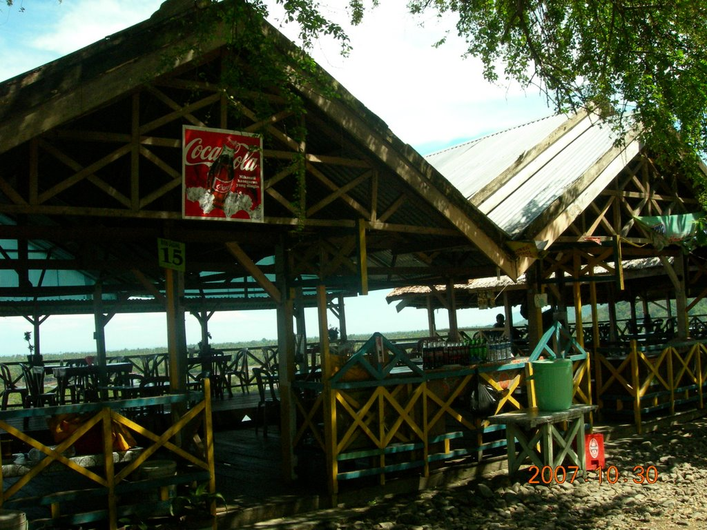

Pertama nuansa pegunungan, kedua daratan kota dan ketiga daerah pesisir. Nuansa pegunungan dengan hawa sejuk begitu kental terasa. Di kiri-kanan jalan yang berkelok, barisan pohon jati tumbuh menjulang. Rumput-rumput hijau dan pot-pot bunga tertata rapi di sepanjang jalur perjalanan.
Rindangnya pepohonan dan sejuknya udara di Bukit Sampoddo kemudian menarik minat para pedagang untuk membangun tempat nongkrong yang cukup nyaman. Di sepanjang jalan, puluhan kedai berjejer menawarkan jagung rebus-bakar yang disiapkan pedagang setempat. Sambil makan, kita bisa bersantai memandang indahnya alam Palopo, petak sawah, tambak, dan laut Teluk Bone. Waktu yang paling ramai adalah di sore dan malam hari.
Apalagi di hari libur, banyak pengunjung yang memang berniat ke Bukit Sampoddo untuk bersantai sambil makan jagung. Untuk anda yang ingin menikmati pemandangan alam kota Palopo dari atas ketinggian, tentu saja Bukit Sampoddo adalah lokasi yang paling tepat.
 Jika ingin nikmati pemandangan alam kota Palopo, Sulawesi Selatan dari atas pegunungan, Bukit Sampoddo adalah tempat yang tepat untuk dikunjungi. Ya, Bukit Sampoddo adalah salah satu bebukitan yang ada di Kota Palopo. Berada di sekitar 10 kilometer ke arah selatan perbatasan Kabupaten Luwu, tempat ini menawarkan tempat 'nongkrong' yang cukup nyaman.
Sepanjang jalan di puncak bukit terdapat puluhan gasebo menyerupai pondok yang menawarkan santapan jagung rebus serta minuman arak manis dari sari buah pohon aren. Sambil bersantap, pengunjung bisa menatap indahnya panorama alam, hamparan luas petak sawah, tambak dan laut Teluk Bone. "Kami senang berkunjung kesini saat libur kerja, karena sambil makan jagung kita bisa melihat pemandangan dari atas bukit" ungkap Sudi, warga Palopo.